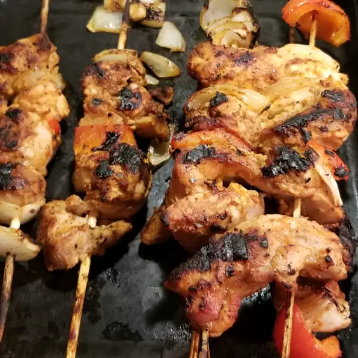

Turkish Chicken Kebabs

Ingredients
- 1 Cup whole-milk Greek yogurt
- 2 Tablepoons freshly squeezed lemon juice, or more to taste
- 2 Tablespoons olive oil
- 2 Tablespoons ketchup
- 6 Cloves garlic, minced
- 1 Tablespoon kosher salt
- 1 1/2 Teaspoons ground cumin
- 1 Teaspoon freshly ground black pepper
- 1 Teaspoon paprika
- 1/8 teaspoon ground cinnamon
- 2 1/2 pounds boneless, skinless chicken thighs, halved
- 4 long metal skewers
Directions
- Whisk yogurt, lemon juice, olive oil, ketchup, garlic, red pepper flakes, salt, cumin, black pepper, paprika, and cinnamon together in a bowl.
- Place chicken thigh halves into the yogurt marinade and coat them thoroughly on all sides. Cover bowl with plastic wrap and refrigerate 2 to 8 hours.
- Preheat an outdoor grill for medium-high heat and lightly oil the grate.
- Using 2 skewers for each kebab, thread half of the chicken thighs onto each pair of skewers making a fairly thick "log" shape.
- Place kebabs on grill. Do not try to turn them until they begin to unstick from the grill, 3 or 4 minutes